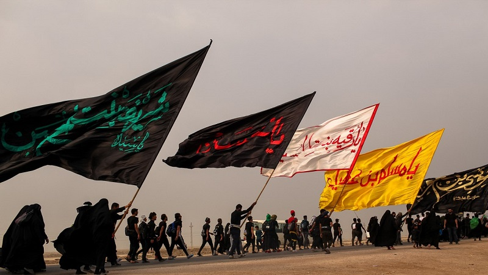

The 20th of Safar is known as the Day of Arbaeen,
as it marks the 40th day after the martyrdom of Imam Husayn,
alayhi as-salam, in Karbala.
Since the fall of Saddam Hussein in Iraq in 2003,
the world has been witnessing millions of pilgrims
who annually travel to Iraq to mark Arbaeen by walking
from Najaf to Karbala over a couple of days.
Some may be wondering what exactly is Arbaeen and
what is its religious significance?
The origin of the Arbaeen visitation of Imam Husayn,
alayhi as-salam, can be traced back to 61 Hijri, when
the companion of the Prophet Jabir ibn Abdilahl Ansari
arrived in Karbala on the 20th of Safar and saw the graves
of Imam al-Husayn and his companions on the plains of Karbala.
It has also been reported in some works of history
that the caravan of Imam Husayn, alayhi as-salam,
that had been imprisoned by Yazid in Damascus
were on their way back to Madinah after being released.
During their return, they also arrived in Karbala
on the 20th of Safar and encountered Jabir. After the
caravan informed Jabir of the details of the tragedy that
transpired in Karbala on the day of Ashura, they all began
to recite, eulogies and mourn the martyrs.
One of the most famous traditions for Arbaeen is the report
attributed to Imam Al-Askari alayhi as-salam, in which he says
"the signs of a believer are 5, 51 units of prayers, Ziarat al-Arbaeen,
wearing the ring on the right hand, prostrating one's forehead on the
ground, and reciting Bismillah Al-Rahman Al-Rahim, loudly in prayers".
Further, in a narration from Imam al-Sadiq, alayhi as-salam,
he tells one of his companions to visit and send salutations to
Imam Husayn, alayhi as-salam, on the 40th day of his martyrdom,
indicating the highly recommended nature of visiting the Imam
on this specific day. This establishes that visiting Imam al-Husayn,
alayhi as-salam, on this day is not an innovation, rather,
it is from the teachings of the Prophet, salla Allahu alayhi wa alihi
wa sallam, and the inheritors of his knowledge, the Imams of the
Ahl ul-Bayt, alayhi as-salam.
According to some narrations, walking to the Ziyarah
of Imam al-Husayn, alayhi as-salam, is itself relevant
and has lots of rewards. In one narration, Imam al-Sadiq,
alayhi as-salam, says: "Whoever comes to the grave of
Husayn while walking, Allah writes a thousand good deeds
for him in every step, erases a thousand sins, and raises him
a thousand levels".
During the brutal rule of Saddam Hussein, restrictions were
placed on this walk, but since his fall, Iraq saw an organic
revival of the walk, that was being suppressed for many decades.
In fact, today it attracts millions of people, not just from within
Iraq but all over the world.
